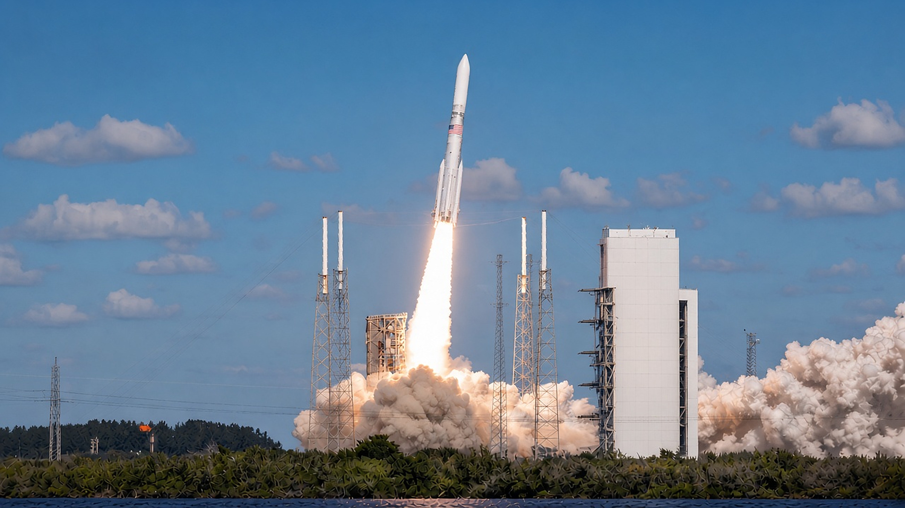

BREAKING: ULA says Vulcan booster underperformed in Leo 1 failure
United Launch Alliance said Tuesday that early data from Sunday's failed Vulcan Leo 1 flight show the booster underperformed just after liftoff, so the stages separated too low and too slow to reach orbit. The Centaur upper stage and all six solid boosters performed normally, ULA said. The FAA will oversee the investigation. No cause has been named.

CAPE CANAVERAL, Fla. — United Launch Alliance said Tuesday that early data from Sunday’s failed Vulcan Leo 1 flight show the booster underperformed just after liftoff, leaving the upper stage too low and too slow to reach orbit and dooming a payload of 40 Amazon Leo satellites.
In its first official update since the mishap, posted at 9:30 a.m. EST Tuesday, ULA said “early indications are that just after liftoff the launch vehicle experienced low booster performance, resulting in stage separation occurring when the vehicle was low in altitude and below minimal velocity to reach orbit.” The company said the Centaur V second stage “appears to have started nominally” and that its RL10 engines “were operating as planned” and “performing well,” but could not recover from the performance loss. All six solid rocket boosters performed nominally, ULA said, after nozzle improvements flown on this mission. The company stressed that it is “very early in the process,” said it wants to “focus on the data and avoid speculation,” and did not name a cause.
The 214-foot Vulcan lifted off from Space Launch Complex 41 at Cape Canaveral Space Force Station at 12:40 p.m. EST Sunday, at the close of the day’s window after controllers called a hold at T-minus 20 seconds. It was the fifth flight of the rocket and the first in nine months, after ULA and Northrop Grumman spent months addressing solid-booster nozzle problems that marked two earlier missions. It was also the first of 38 Vulcan flights Amazon has booked to deploy its Leo broadband constellation, and the first outright failure of a ULA rocket since the Boeing-Lockheed Martin joint venture was formed in 2006. An attempt Friday was scrubbed when a ground nitrogen plant went down, and a Saturday try was delayed by network problems between the vehicle and the ground. ULA said Sunday that telemetry and the mission were lost about 10 minutes after liftoff.
The Federal Aviation Administration, in a Nov. 16 statement, said it is requiring a mishap investigation of the flight, which it identified as KV-01. The FAA will oversee the ULA-led inquiry, be involved at every step, and must approve ULA’s final report, including any corrective actions. During the event, the agency said, it activated two Debris Response Areas and briefly slowed aircraft outside the area where space-vehicle debris was falling or held aircraft at their departure airports. A return to flight, the FAA said, depends on a finding that any system, process, or procedure related to the mishap does not affect public safety.
Vulcan’s first stage is powered by two methane-burning BE-4 engines built by Blue Origin, the same engine family that powers Blue Origin’s New Glenn rocket, which is not expected to fly again until January 2027 after an explosion on the pad in May. ULA CEO Mark Peller told Aviation Week before Sunday’s flight that the BE-4s on Leo 1 had been retrofitted with a Blue Origin valve “design improvement.” Neither ULA nor Blue Origin has blamed the BE-4s for the failure. Ars Technica, citing sources, reported that the anomaly appeared to be in the booster stage, not the Centaur or the solids, and that the BE-4s continued firing at least 30 seconds past a planned cutoff just shy of T+5 minutes — a possible attempt to compensate for underperformance. A telemetry-driven animation on ULA’s broadcast, Ars reported, showed the vehicle beginning to spin after booster shutdown, the spin continuing through Centaur separation, and the RL10s then vectoring in an apparent effort to recover. Those accounts do not line up neatly with a simple picture of the engines failing at ignition, and ULA has not confirmed them.
A day after the failure, the U.S. Space Force’s Space Systems Command announced modifications to National Security Space Launch Phase 3 Lane 2 contracts with SpaceX, United Launch Services — ULA’s contracting arm — and Blue Origin that raise the combined maximum ceiling by $985 million, through April 2033. No funds were obligated at the time of the award. The contract notice does not tie the change to the Vulcan mishap.
NASA Administrator Jared Isaacman, writing on X on Sunday, offered the agency’s help and said, “Artemis, Moon Base, and the nation need ULA.”
Sources
-
United Launch Alliance
Vulcan Leo 1 updates
-
Federal Aviation Administration
FAA Requires Mishap Investigation of ULA KV-01
-
Spaceflight Now
ULA suffers first outright failure with loss of Vulcan rocket carrying 40 Amazon Leo satellites
-
Ars Technica
Vulcan rocket fails during launch, dealing major blow to SpaceX competitors
-
WESH
ULA Vulcan booster underperformed; loss of Amazon satellite
-
Department of War (contracts)
Nov. 16, 2026 contract announcements (NSSL Phase 3 Lane 2 modifications)
-
GovCon Wire
SpaceX, ULA, Blue Origin Space Force NSSL contract modifications